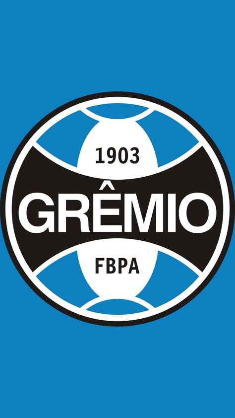

Destaques 2025
Sobre este catalogo
Este catalogo mostra os três destaques do futebol brasileiro em 2025
Em 1 Lugar
Gemio Futebol porto alegrense
Sobrevivência na Série A garantida — Com a vitória sobre Palmeiras, o Grêmio alcançou 46 pontos e assegurou a permanência na elite nacional, encerrando o risco de rebaixamento. Rendimento no returno relativamente estável — Na segunda metade do campeonato, o time se manteve entre os nove primeiros no returno, com aproveitamento de ~50% (4 vitórias, 3 empates, 3 derrotas em 10 jogos). Grêmio News Artilheiro da temporada no Brasileirão — Carlos Vinícius foi o goleador do Grêmio no Brasileirão 2025, com 10 gols. Espírito de reação em momentos decisivos — A vitória por 2-0 sobre Vasco da Gama na 34ª rodada foi apontada como uma “melhor atuação do ano” e importante para a moral do grupo.
Em 2 Lugar.
Mirasol futebol clube

Primeira participação na Série A e vaga histórica à Libertadores 2026 2025 foi a primeira vez que o Mirassol disputou a elite do futebol brasileiro. Logo na estreia, conseguiu uma campanha de destaque e garantiu, com antecedência, a classificação para a Copa Libertadores da América 2026 Surpresa no Brasileirão: “caçula” que incomodou os grandes — O time do interior se firmou como a grande sensação do torneio, alcançando resultados expressivos contra clubes tradicionais. Gazeta Esportiva, Força como mandante — Em 2025, o clube perdeu pouquíssimas vezes atuando em casa: perdeu apenas um dos últimos 41 jogos como mandante em competições nacionais, mostrando solidez no seu estádio.ge +1 Ataque eficiente e bom desempenho defensivo — O Mirassol figurou entre os times com melhor ataque do campeonato e também tinha uma defesa relativamente sólida para os padrões de um recém-promovido.
Em 3 lugar
Santos futebol clube

O ano de 2025 marcou o retorno do Santos à elite (Campeonato Brasileiro Série A), após ter conquistado a Série B em 2024. Em momentos em que a estrela Neymar atuou, o time apresentou melhor rendimento — nas partidas com ele em campo: 10 vitórias, 8 empates e 7 derrotas em 25 jogos, com o Santos marcando 31 gols nesses jogos. CNN Brasil A recuperação recente com vitória por 3 a 0 sobre o Sport Recife deixou o clube fora da zona imediata de rebaixamento, trazendo alívio à torcida